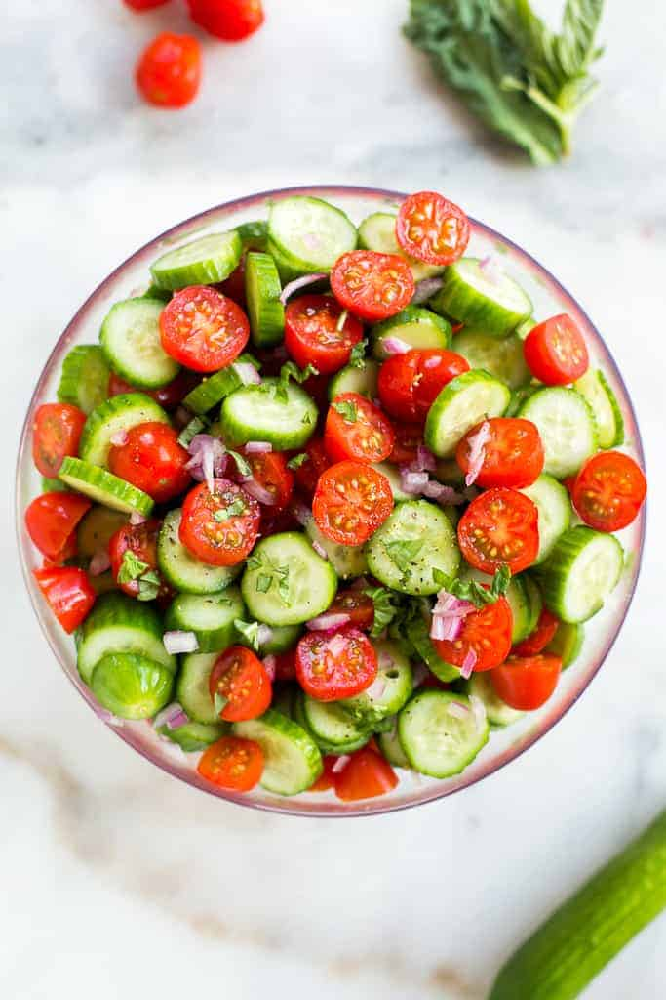

Salad

Description:
Tomato salad with cucumber and onion will refresh any table.
It can be prepared for breakfast, lunch and dinner.
Ingredients:
- tomato
- cucumber
- onion
- garlic
- sunflower oil
- salt
- pepper
Steps:
- chop tomatoes and cucumbers
- chop onion and garlic
- add sunflower oil
- add salt and pepper